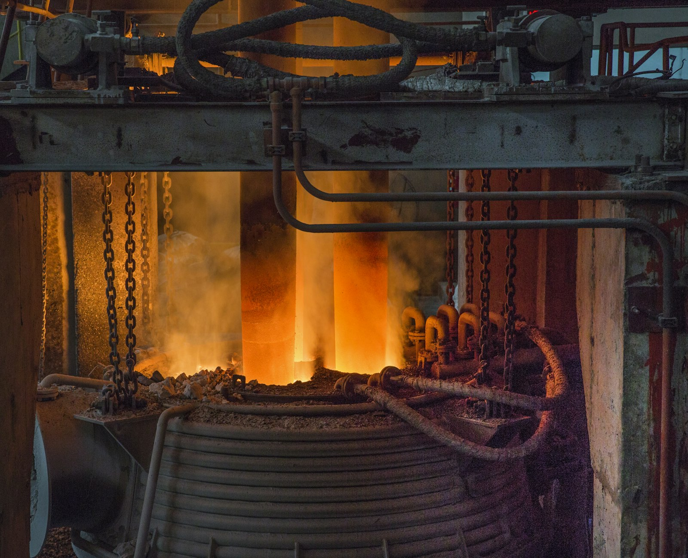

事業分野
鉄・鋼・鋳鉄の製造
中周波誘導炉で鋳鉄・鋼を溶解し、出湯ごとに発光分光分析装置で化学成分を管理しています。インゴット、鋳造素材、溶湯を自社鋳造ラインに供給します。
加工能力
主な仕様
現行ラインの参考値です。この範囲を超える部品については、エンジニアが図面を確認して対応方法をご提案します。
- 溶解炉
- 中周波誘導炉
- 材料グレード
- FC200 - FC300, FCD400 - FCD600、炭素鋼、低合金鋼
- 成分検査
- 発光分光分析装置（注湯前後）
- 注湯温度
- 1,380 - 1,450 °C（鋳鉄）、1,550 - 1,620 °C（鋼）
対応範囲
工場で行う作業

- 01原料スクラップ・銑鉄の選別と分類
- 02溶解、精錬、グレードに合わせた成分調整
- 03球状黒鉛鋳鉄の球状化処理・接種
- 04出湯ごとのサンプリングと分光分析
- 05インゴットへの鋳込み、または鋳造ラインへの供給
用途
主な製作品
- 機械部品鋳造用の素材
- 鍛造・圧延用の鋼素材
- 耐摩耗合金鋳鉄
Q&A
よくあるご質問
お客様指定の材料グレードで溶解できますか？
はい。JIS、ASTM、GOST、TCVNなどの規格による材料グレードをお知らせいただければ、冶金エンジニアが照合し、溶解前に目標化学成分をご連絡します。
材料証明書は発行できますか？
各ロットに溶解チャージの化学成分分析結果を添付します。機械的性質は、ご要望に応じて付属鋳造試験片で試験します。